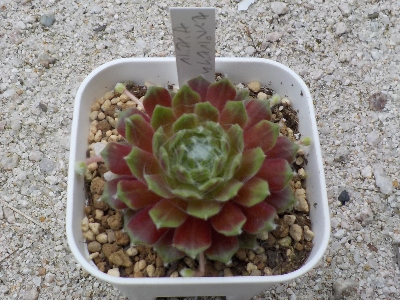
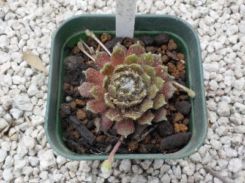
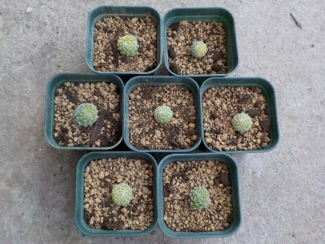

多肉植物屋さんで赤と緑のグラデーションがキレイなガゼルを買いました。
更新日 : 2026/04/13

普通にキレイなので買いました。
調べてみると、赤いのは紅葉してる冬だけみたいですね。なのでこれもそのうち緑だけになるようです。
どれくらいの期間が赤いんでしょうね。
更新日 : 2026/04/13

普通にキレイなので買いました。
調べてみると、赤いのは紅葉してる冬だけみたいですね。なのでこれもそのうち緑だけになるようです。
どれくらいの期間が赤いんでしょうね。
更新日 : 2026/04/22

何にも考えずに砂を上から入れたら、葉っぱが砂まみれになりました。
息を強く吹きかけて落としましたが、ほこりがかかった感じになってしまいました。
植え替えるなら、もっと大きい鉢にした方が簡単で良かったかもしれないです。
更新日 : 2026/10/12

7個も増えました。全部が根が出て育つかは分かりませんが、ちょっと増えすぎかな。
次は枯れた分しか増やさないようにします。そろそろ新しく多肉を買いに行こうかと思っていましたが、気軽に買えないですね。
寒さに強く増やしやすいそうです。